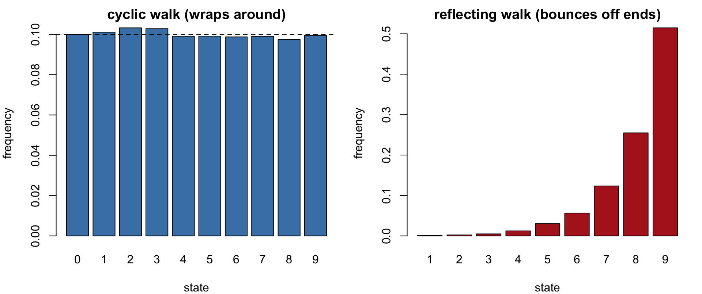
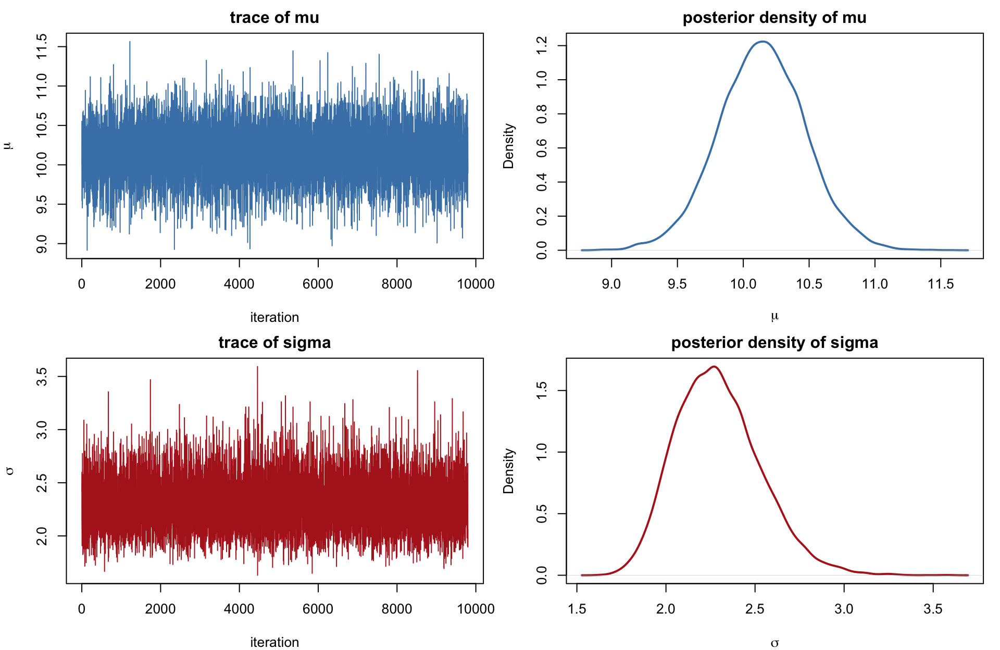
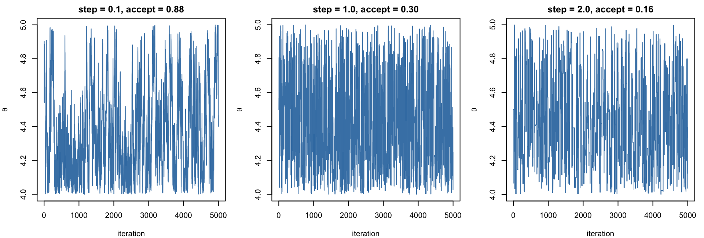
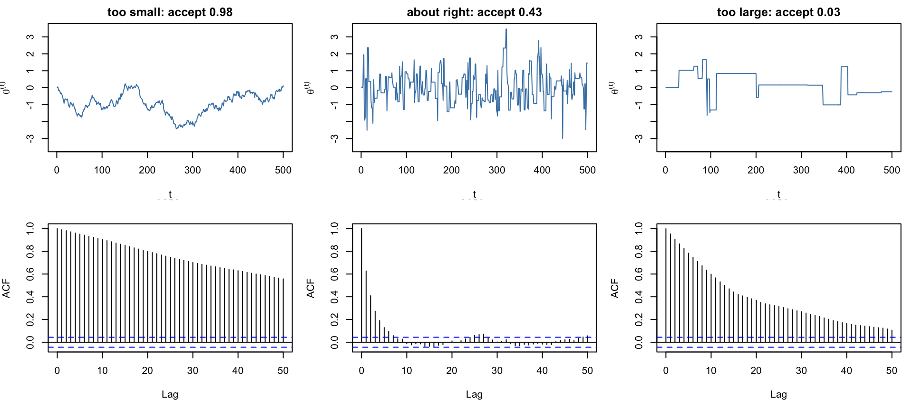
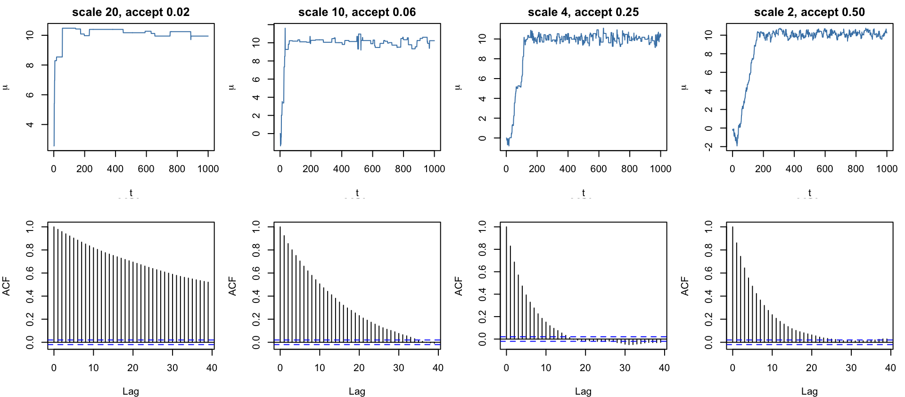
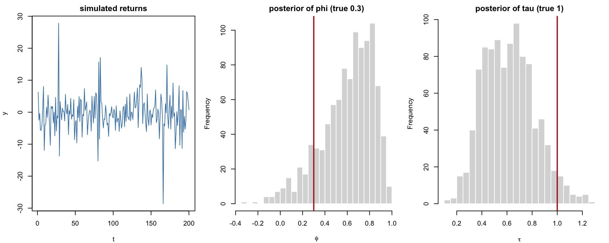

Code
library(truncnorm)
library(rstan)
rstan_options(auto_write = TRUE)library(truncnorm)
library(rstan)
rstan_options(auto_write = TRUE)The last two chapters drew from a fixed proposal \(g\): an envelope for rejection sampling, an importance distribution for reweighting. Both work well when \(g\) can be made to resemble the target \(f\) over its whole support, but in more than a handful of dimensions no fixed \(g\) does — the target occupies an ever-thinner sliver of the space \(g\) covers, exactly the curse of dimensionality met already for quadrature grids. Markov chain Monte Carlo (MCMC) answers this differently: instead of one global proposal, build a random process \(\theta^{(0)}, \theta^{(1)}, \theta^{(2)}, \ldots\) that moves locally — each step depends only on where the chain currently is — and is engineered so that, after enough steps, \(\theta^{(t)}\) is (approximately) distributed as the target \(f\). The price is that consecutive draws are dependent and the guarantee is only asymptotic; the payoff is that the same local-move idea scales to any dimension.
This chapter develops the Markov chain theory that makes this work, then builds three increasingly automatic ways to construct such a chain — Gibbs sampling, Metropolis–Hastings, and Hamiltonian Monte Carlo — and ends with Stan, which automates the last of these for essentially arbitrary models.
A sequence \(\theta^{(0)}, \theta^{(1)}, \theta^{(2)}, \ldots\) is a Markov chain if the future depends on the past only through the present, \[ P\big(\theta^{(i)} \mid \theta^{(0)}, \ldots, \theta^{(i-1)}\big) = T\big(\theta^{(i)} \mid \theta^{(i-1)}\big), \] where \(T\), the transition distribution, does not depend on \(i\). A chain is completely specified by a starting value (or distribution) and \(T\); simulating it just means repeatedly drawing \(\theta^{(i)} \sim T(\cdot \mid \theta^{(i-1)})\).
The question MCMC answers is: given a target \(\pi\) known only up to a constant, can we design a \(T\) such that, no matter where the chain starts, \(\theta^{(i)}\) converges in distribution to \(\pi\) as \(i \to \infty\)? If so, running the chain for a long time and averaging \(a(\theta^{(i)})\) over the later iterations estimates \(E_\pi[a(\theta)]\) — this is what “MCMC” means in practice.
To make “designing \(T\)” concrete before turning to theory, consider a chain on the ten states \(\{0, 1, \ldots, 9\}\), arranged on a circle. At each step it moves one position clockwise with probability \(0.45\), one position counter-clockwise with probability \(0.45\), and stays put with probability \(0.1\) — a cyclic random walk, since state \(9\)’s clockwise neighbour wraps around to state \(0\):
sim_cyclic_walk <- function(ini, iters, n = 10) {
forward <- function(i) if (i == n - 1) 0 else i + 1
backward <- function(i) if (i == 0) n - 1 else i - 1
mc <- integer(iters + 1); mc[1] <- ini
for (i in 2:(iters + 1)) {
u <- runif(1)
mc[i] <- if (u < 0.45) forward(mc[i - 1])
else if (u > 0.55) backward(mc[i - 1])
else mc[i - 1]
}
mc
}Now change only the two boundary states: at \(0\), “backward” does nothing (stays at \(0\)) instead of wrapping to \(9\); at \(9\), “forward” does nothing instead of wrapping to \(0\). This is a reflecting walk on a line segment rather than a cycle:
sim_reflecting_walk <- function(ini, iters, n = 10) {
forward <- function(i) if (i == n - 1) n - 1 else i + 1
backward <- function(i) if (i == 0) 0 else i - 1
mc <- integer(iters + 1); mc[1] <- ini
for (i in 2:(iters + 1)) {
u <- runif(1)
mc[i] <- if (u < 0.4) forward(mc[i - 1])
else if (u > 0.8) backward(mc[i - 1])
else mc[i - 1]
}
mc
}set.seed(1)
cyc <- sim_cyclic_walk(2, 20000)
refl <- sim_reflecting_walk(2, 20000)
par(mfrow = c(1, 2), mar = c(4, 4, 2, 1))
barplot(table(cyc[-(1:200)]) / length(cyc[-(1:200)]), col = "steelblue",
xlab = "state", ylab = "frequency", main = "cyclic walk (wraps around)")
abline(h = 0.1, lty = 2)
barplot(table(refl[-(1:200)]) / length(refl[-(1:200)]), col = "firebrick",
xlab = "state", ylab = "frequency", main = "reflecting walk (bounces off ends)")
The two chains use almost the same rule and yet settle into completely different long-run behaviour, and the theory below explains why. In the cyclic walk every state has exactly the same local picture — two neighbours, reached with equal probability \(0.45\) in each direction — so no state is structurally different from any other, and the equilibrium distribution treats them all alike: uniform on \(\{0,\ldots,9\}\). The reflecting walk changes two things at once, and both matter. First, its forward and backward probabilities are themselves unequal (\(0.4\) versus \(0.2\), with \(0.4\) probability of staying put), so even on a cycle this chain would drift persistently in one direction — though a cyclic chain with that same asymmetry would still converge to uniform, because every state would still be structurally identical to every other. Second, and decisively, states \(0\) and \(9\) are no longer structurally identical to the interior states: an attempted move off either end is turned into a self-loop instead of wrapping around, so probability that would have left the segment is returned to the same state. Combined with the rightward drift, this reflecting boundary acts as a trap at state \(9\) specifically — mass drifts right, and once it arrives it accumulates there rather than passing through — which is exactly the extreme, almost-all-mass-at-\(9\) pattern in the right panel above. This is the invariance and detailed-balance machinery below made visible: a transition rule under which every state looks alike to the chain preserves the uniform distribution, and one that treats some states differently does not.
\(\pi\) is an invariant (or stationary) distribution of transition \(T\) if \[ \int \pi(\theta)\, T(\theta \to \theta') \, d\theta = \pi(\theta') \qquad \text{for all } \theta'. \] In words: if \(\theta \sim \pi\) and one step of the chain is applied, the result is again distributed as \(\pi\) — \(\pi\) is a fixed point of \(T\). Invariance alone does not guarantee the chain converges to \(\pi\) from an arbitrary start (a chain that never moves leaves every distribution invariant), so two more conditions are needed: aperiodicity (the chain does not cycle deterministically through a fixed sequence of states) and irreducibility (every state can eventually be reached from every other). Under all three, \(\theta^{(i)} \to \pi\) in distribution from any starting point, and ergodic averages converge, \(\frac1n\sum_i a(\theta^{(i)}) \to E_\pi[a(\theta)]\).
Invariance is a global condition (it involves integrating over all \(\theta\)) and is awkward to check directly for a proposed \(T\). The standard shortcut is a local, pairwise condition. \(T\) satisfies detailed balance with respect to \(\pi\) if \[ \pi(\theta)\, T(\theta \to \theta') = \pi(\theta')\, T(\theta' \to \theta) \qquad \text{for all } \theta, \theta', \] i.e. the flow of probability from \(\theta\) to \(\theta'\) under \(\pi\) exactly balances the reverse flow (the transition \(T\) itself need not be symmetric — only the \(\pi\)-weighted flow is). Detailed balance implies invariance: integrating both sides over \(\theta\), \[ \int \pi(\theta)\, T(\theta \to \theta') \, d\theta = \int \pi(\theta')\, T(\theta' \to \theta) \, d\theta = \pi(\theta') \underbrace{\int T(\theta' \to \theta)\, d\theta}_{=\,1} = \pi(\theta'). \] Every construction in this chapter — Gibbs, Metropolis–Hastings, Hamiltonian Monte Carlo — is a recipe for building a \(T\) that satisfies detailed balance (or, for Gibbs, invariance directly) with respect to a given target \(\pi\), so that simulating the chain long enough and discarding an initial burn-in period produces (dependent) draws from \(\pi\).
Suppose \(\theta = (\theta_1, \theta_2)\) and both full conditionals \(\pi(\theta_1 \mid \theta_2)\) and \(\pi(\theta_2 \mid \theta_1)\) can be sampled directly, even though the joint \(\pi(\theta_1, \theta_2)\) has no closed form or cannot be sampled directly. The Gibbs sampler alternates \[ \theta_1^{(t)} \sim \pi\big(\theta_1 \mid \theta_2^{(t-1)}\big), \qquad \theta_2^{(t)} \sim \pi\big(\theta_2 \mid \theta_1^{(t)}\big). \] Each half-step leaves \(\pi\) invariant: if \((\theta_1, \theta_2) \sim \pi\), then \(\theta_2 \sim \pi(\theta_2)\) (its marginal), and replacing \(\theta_1\) by a fresh draw from \(\pi(\theta_1 \mid \theta_2)\) produces a pair with joint density \(\pi(\theta_2)\,\pi(\theta_1 \mid \theta_2) = \pi(\theta_1, \theta_2)\) — exactly \(\pi\) again. Cycling through both coordinates therefore also leaves \(\pi\) invariant, and as long as the full conditionals are everywhere positive the chain is irreducible and aperiodic. No proposal, no acceptance step, no tuning: Gibbs sampling only needs full conditionals that can be sampled.
Take the running example for this half of the book: \(x_1, \ldots, x_n \mid \mu, \sigma^2 \overset{iid}{\sim} N(\mu, \sigma^2)\), with independent priors \(\mu \sim N(\mu_0, \sigma_0^2)\) and \(\sigma^2 \sim \mathrm{IG}(a_0, \lambda_0)\) (inverse-gamma: \(1/\sigma^2 \sim \mathrm{Gamma}(a_0, \lambda_0)\), so \(a_0\) is a shape and \(\lambda_0\) a rate/scale). The joint posterior is \[ P(\mu, \sigma^2 \mid x) \ \propto\ e^{-(\mu-\mu_0)^2 / (2\sigma_0^2)} \cdot (\sigma^2)^{-(a_0+1)} e^{-\lambda_0/\sigma^2} \cdot (\sigma^2)^{-n/2} \exp\Big\{-\sum_{i=1}^n \tfrac{(x_i-\mu)^2}{2\sigma^2}\Big\}, \] two-dimensional with no closed-form normalizing constant, but each conditional is standard.
Conditional of \(\mu\). Collect the factors that involve \(\mu\) and expand \(\sum_i(x_i-\mu)^2 = n\mu^2 - 2n\mu\bar x + \sum_i x_i^2\): \[ P(\mu \mid \sigma^2, x) \ \propto\ \exp\Big\{-\tfrac12\Big[\big(\tfrac{1}{\sigma_0^2} + \tfrac{n}{\sigma^2}\big)\mu^2 - 2\big(\tfrac{\mu_0}{\sigma_0^2} + \tfrac{n\bar x}{\sigma^2}\big)\mu\Big]\Big\}, \] which is the kernel of \(N(m, v)\) with \(1/v = 1/\sigma_0^2 + n/\sigma^2\) and \(m/v = \mu_0/\sigma_0^2 + n\bar x/\sigma^2\) — a precision-weighted average of the prior mean and the sample mean, with \(n/\sigma^2\) the weight the data contribute. As \(n \to \infty\), \(m \to \bar x\) and \(v \approx \sigma^2/n\): the prior is overwhelmed.
Conditional of \(\sigma^2\). Collect the factors involving \(\sigma^2\): \[ P(\sigma^2 \mid \mu, x) \ \propto\ (\sigma^2)^{-(a_0+1)} e^{-\lambda_0/\sigma^2} \cdot (\sigma^2)^{-n/2} e^{-\sum_i(x_i-\mu)^2/(2\sigma^2)} = (\sigma^2)^{-\left(\frac n2 + a_0 + 1\right)} \exp\Big\{-\tfrac{\lambda_0 + \frac12\sum_i(x_i-\mu)^2}{\sigma^2}\Big\}, \] again an inverse-gamma kernel, \(\sigma^2 \mid \mu, x \sim \mathrm{IG}\big(\tfrac n2 + a_0,\ \tfrac12\sum_i(x_i-\mu)^2 + \lambda_0\big)\): the prior contributes \(a_0\) “pseudo-observations” worth of shape and \(\lambda_0\) worth of sum-of-squares, and the data add \(n\) and \(\sum_i(x_i-\mu)^2\) to each.
gibbs_norm <- function(iters, x, mu0, sigma0, alpha, w, mu_init = 0, s2_init = 1) {
n <- length(x); sumx <- sum(x)
out <- matrix(NA_real_, iters, 2, dimnames = list(NULL, c("mu", "s2")))
mu <- mu_init; s2 <- s2_init
for (t in seq_len(iters)) {
v <- 1 / (n / s2 + 1 / sigma0)
mu <- rnorm(1, (sumx / s2 + mu0 / sigma0) * v, sqrt(v))
s2 <- 1 / rgamma(1, (alpha + n) / 2, (alpha * w + sum((x - mu)^2)) / 2)
out[t, ] <- c(mu, s2)
}
out
}A preallocated matrix filled by a plain for loop replaces the original replicate()-with-<<- pattern: it does the same work with one direct assignment per iteration instead of a closure mutating variables in its enclosing scope, and it makes the recurrence — each row built from the previous one — visually explicit.
set.seed(2)
x <- rnorm(50, 10, 2)
draws_gibbs <- gibbs_norm(10000, x, mu0 = 0, sigma0 = 1e10, alpha = 1e-5, w = 1e-5)
burn <- 1:200
mu_g <- draws_gibbs[-burn, "mu"]
sd_g <- sqrt(draws_gibbs[-burn, "s2"])
par(mfrow = c(2, 2), mar = c(4, 4, 2, 1))
plot(mu_g, type = "l", col = "steelblue", xlab = "iteration", ylab = expression(mu), main = "trace of mu")
plot(density(mu_g), col = "steelblue", lwd = 2, main = "posterior density of mu", xlab = expression(mu))
plot(sd_g, type = "l", col = "firebrick", xlab = "iteration", ylab = expression(sigma), main = "trace of sigma")
plot(density(sd_g), col = "firebrick", lwd = 2, main = "posterior density of sigma", xlab = expression(sigma))
gibbs_summary <- data.frame(
parameter = c("mu", "sigma"),
mean = c(mean(mu_g), mean(sd_g)),
sd = c(sd(mu_g), sd(sd_g)),
q025 = c(quantile(mu_g, 0.025), quantile(sd_g, 0.025)),
q975 = c(quantile(mu_g, 0.975), quantile(sd_g, 0.975))
)
knitr::kable(gibbs_summary, digits = 3,
col.names = c("parameter", "mean", "sd", "2.5%", "97.5%"),
align = c("l", "r", "r", "r", "r"))| parameter | mean | sd | 2.5% | 97.5% |
|---|---|---|---|---|
| mu | 10.141 | 0.330 | 9.489 | 10.791 |
| sigma | 2.293 | 0.239 | 1.885 | 2.809 |
Gibbs sampling extends immediately to models with latent variables, by treating the latent quantities as extra parameters to sample. Suppose the \(x_i\) are not observed exactly but only rounded down to the nearest multiple of some interval length \(l\) (ages recorded in whole years, measurements binned to the nearest instrument tick): we observe \(y_i\) with \(x_i \in [y_i, y_i + l)\). Data augmentation adds \(x_1,\ldots,x_n\) as unknowns and Gibbs-samples all three blocks: \[
x_i^{(t)} \sim P\big(x_i \mid \mu^{(t-1)}, \sigma^{2(t-1)}, y_i\big), \qquad
\mu^{(t)} \sim P\big(\mu \mid x^{(t)}, \sigma^{2(t-1)}\big), \qquad
\sigma^{2(t)} \sim P\big(\sigma^2 \mid x^{(t)}, \mu^{(t)}\big).
\] The last two steps are exactly the conditionals derived above, applied to the imputed \(x\). The first is a normal density restricted to the interval \([y_i, y_i+l)\) and renormalized — a truncated normal, sampled directly with truncnorm::rtruncnorm rather than by rejection:
gibbs_norm_interval <- function(iters, y, mu0, sigma0, alpha, w, l = 1) {
n <- length(y)
mu <- 0; s2 <- 1; x <- rep(0, n)
out <- matrix(NA_real_, iters, 2 + n)
for (t in seq_len(iters)) {
x <- rtruncnorm(n, a = y, b = y + l, mean = mu, sd = sqrt(s2))
sumx <- sum(x)
v <- 1 / (n / s2 + 1 / sigma0)
mu <- rnorm(1, (sumx / s2 + mu0 / sigma0) * v, sqrt(v))
s2 <- 1 / rgamma(1, (alpha + n) / 2, (alpha * w + sum((x - mu)^2)) / 2)
out[t, ] <- c(mu, s2, x)
}
list(mu = out[, 1], sd = sqrt(out[, 2]), x = out[, -(1:2)])
}set.seed(3)
x_true <- rnorm(200, 100, 40)
y_obs <- floor(x_true / 10) * 10
fit_cens <- gibbs_norm_interval(5000, y_obs, mu0 = 0, sigma0 = 1e10, alpha = 1e-5, w = 1e-5, l = 10)
burn2 <- 1:200
knitr::kable(data.frame(
quantity = c("true mu (unknown to the model)", "true sigma", "posterior mean of mu", "posterior mean of sigma"),
value = c(100, 40, mean(fit_cens$mu[-burn2]), mean(fit_cens$sd[-burn2]))
), digits = 2, col.names = c("quantity", "value"), align = c("l", "r"))| quantity | value |
|---|---|
| true mu (unknown to the model) | 100.00 |
| true sigma | 40.00 |
| posterior mean of mu | 100.63 |
| posterior mean of sigma | 38.71 |
The rounding destroys a great deal of information (each \(y_i\) only says which decade \(x_i\) fell in), yet the augmented Gibbs sampler still recovers \(\mu\) and \(\sigma\) close to their true values, because it correctly propagates the uncertainty in each \(x_i\) rather than, say, treating \(y_i\) as if it were exact.
Gibbs sampling needs full conditionals that are both known and directly sample-able — a strong requirement outside conjugate models. Metropolis–Hastings (MH) needs only a target \(\pi(\theta)\) computable up to a constant and any proposal distribution \(\tilde T(\theta^* \mid \theta)\) we can sample from. Starting from \(\theta^{(0)}\), repeat:
Only the ratio \(\pi(\theta^*)/\pi(\theta^{(t-1)})\) is needed, so any normalizing constant of \(\pi\) cancels — exactly as in rejection sampling, but here a rejected proposal still contributes a draw (the repeated current value) rather than being discarded, which is what lets MH work even when \(\pi\) has no available envelope. One can show (by checking detailed balance directly, splitting into the “propose and accept” and “reject and stay” cases and using the \(\min\{\cdot,\cdot\}\) identity \(\min\{a,b\} = \min\{b,a\}\)) that this \(T\) leaves \(\pi\) invariant regardless of what \(\tilde T\) is, as long as its support is compatible with \(\pi\)’s.
If \(\tilde T\) is symmetric, \(\tilde T(\theta^* \mid \theta) = \tilde T(\theta \mid \theta^*)\) — e.g. \(\theta^* \sim N(\theta^{(t-1)}, \varsigma^2)\) — the proposal terms cancel and \(r = \min\{\pi(\theta^*)/\pi(\theta^{(t-1)}), 1\}\): uphill proposals are always accepted, downhill ones accepted in proportion to how much worse they are. \(\varsigma\), the step size, is the only tuning parameter.
met_gauss <- function(iters, log_f, stepsizes, ini_value, ...) {
state <- ini_value; no_var <- length(state)
logf <- log_f(ini_value, ...)
if (!is.finite(logf)) stop("Initial value has zero probability")
out <- matrix(NA_real_, iters, no_var); n_acc <- 0
for (t in seq_len(iters)) {
proposal <- rnorm(no_var, state, stepsizes)
new_logf <- log_f(proposal, ...)
if (log(runif(1)) < new_logf - logf) {
state <- proposal; logf <- new_logf; n_acc <- n_acc + 1
}
out[t, ] <- state
}
attr(out, "accept_rate") <- n_acc / iters
out
}An indicator-shaped target needs no special handling: sampling a normal truncated to \([l, u]\) by targeting \(\pi(\theta) \propto \varphi(\theta)\,I(l \le \theta \le u)\), any proposal landing outside \([l,u]\) has \(\pi(\theta^*) = 0\), hence \(r = 0\), and is automatically rejected.
log_tnorm <- function(x, mu, sigma, lb, ub) {
if (x > lb && x < ub) dnorm(x, mu, sigma, log = TRUE) else -Inf
}
par(mfrow = c(1, 3), mar = c(4, 4, 2, 1))
for (step in c(0.1, 1, 2)) {
mc <- met_gauss(5000, log_tnorm, stepsizes = step, ini_value = 4.5, mu = 0, sigma = 2, lb = 4, ub = 5)
plot(mc, type = "l", col = "steelblue", xlab = "iteration", ylab = expression(theta),
main = sprintf("step = %.1f, accept = %.2f", step, attr(mc, "accept_rate")))
}
The chain’s draws are dependent, and what determines the precision of an ergodic average is not the acceptance rate itself but the resulting autocorrelation: for a stationary chain with lag-\(k\) autocorrelation \(\rho_k\), \[ \mathrm{Var}\Big(\tfrac1T\sum_{t=1}^T \theta^{(t)}\Big) \approx \frac{\sigma^2}{T}\Big(1 + 2\sum_{k \ge 1} \rho_k\Big) = \frac{\sigma^2}{T_\text{eff}}, \] so the tuning goal is small autocorrelation, not a high acceptance rate as such. A step too small is accepted almost every time but crawls (highly autocorrelated); a step too large is almost always rejected, so the chain barely moves either. Both extremes waste the same \(T\) iterations on far fewer effective ones — the figure below (three step sizes on a \(N(0,1)\) target) makes this visible directly in the trace and the ACF.
mh_std_normal <- function(sig, n = 2000) {
th <- numeric(n); th[1] <- 0; acc <- 0
for (t in 2:n) {
p <- th[t - 1] + rnorm(1, 0, sig)
if (runif(1) < dnorm(p) / dnorm(th[t - 1])) { th[t] <- p; acc <- acc + 1 } else th[t] <- th[t - 1]
}
list(th = th, acc = acc / (n - 1))
}
res <- lapply(c(0.1, 2.4, 40), mh_std_normal)
labs <- c("too small", "about right", "too large")
par(mfrow = c(2, 3), mar = c(4, 4, 2, 1))
for (k in 1:3) plot(res[[k]]$th[1:500], type = "l", col = "steelblue", xlab = "t", ylab = expression(theta^(t)),
ylim = c(-3.5, 3.5), main = sprintf("%s: accept %.2f", labs[k], res[[k]]$acc))
for (k in 1:3) acf(res[[k]]$th, lag.max = 50, main = "ACF")
For random-walk Metropolis on a smooth target, theory recommends an acceptance rate near \(0.234\) in high dimension (up to about \(0.44\) in one dimension) as the rate that minimizes autocorrelation for a given computational budget — a useful rule of thumb, not a target to hit exactly.
\(\sigma^2 > 0\) makes a symmetric normal random walk directly on \(\sigma^2\) wasteful (many proposals land below zero), so reparametrize \(w = \log \sigma^2\), which ranges over all of \(\mathbb R\). By the change-of-variables formula, the posterior in \((\mu, w)\) picks up a Jacobian factor \(e^w\) relative to the posterior in \((\mu, \sigma^2)\); omitting it targets the wrong distribution.
log_post_mu_w <- function(mu, w, x, mu0, sigma0, alpha, wprior) {
s2 <- exp(w)
sum(dnorm(x, mu, sqrt(s2), log = TRUE)) + dnorm(mu, mu0, sqrt(sigma0), log = TRUE) +
(-(alpha / 2 + 1) * log(s2) - alpha * wprior / (2 * s2)) + w # "+ w" is the log Jacobian
}
mh_norm <- function(iters, stepsizes, x, mu0, sigma0, alpha, w) {
log_f <- function(state) log_post_mu_w(state[1], state[2], x, mu0, sigma0, alpha, w)
mc <- met_gauss(iters, function(state) log_f(state), stepsizes, ini_value = c(0, 0))
list(mu = mc[, 1], sd = exp(0.5 * mc[, 2]), accept_rate = attr(mc, "accept_rate"))
}scales <- c(20, 10, 4, 2)
fits <- lapply(scales, function(s) mh_norm(10000, c(s, s) / sqrt(length(x)), x, 0, 1e10, 1e-5, 1e-5))
par(mfcol = c(2, 4), mar = c(4, 4, 2, 1))
for (k in seq_along(fits)) {
plot(fits[[k]]$mu[1:1000], type = "l", col = "steelblue", xlab = "t", ylab = expression(mu),
main = sprintf("scale %g, accept %.2f", scales[k], fits[[k]]$accept_rate))
acf(fits[[k]]$mu[-(1:500)], main = "ACF")
}
Scale \(4\) gives the least autocorrelated trace among the four, consistent with an acceptance rate closer to the \(0.2\)–\(0.4\) range than the very low or very high rates at the extremes. Running a long chain at that scale and comparing to the Gibbs sampler on the same data:
mh_long <- mh_norm(50000, c(4, 4) / sqrt(length(x)), x, 0, 1e10, 1e-5, 1e-5)
keep_mh <- -(1:1000)
coherence <- data.frame(
method = c("Metropolis-Hastings", "Gibbs"),
mean_mu = c(mean(mh_long$mu[keep_mh]), mean(mu_g)),
sd_mu = c(sd(mh_long$mu[keep_mh]), sd(mu_g)),
mean_sigma = c(mean(mh_long$sd[keep_mh]), mean(sd_g)),
sd_sigma = c(sd(mh_long$sd[keep_mh]), sd(sd_g))
)
knitr::kable(coherence, digits = 3, align = c("l", "r", "r", "r", "r"))| method | mean_mu | sd_mu | mean_sigma | sd_sigma |
|---|---|---|---|---|
| Metropolis-Hastings | 10.144 | 0.33 | 2.294 | 0.237 |
| Gibbs | 10.141 | 0.33 | 2.293 | 0.239 |
The two ideas combine directly. If \(\theta = (\theta_1, \theta_2)\) and \(\pi(\theta_1 \mid \theta_2)\) has no convenient sampler while \(\pi(\theta_2 \mid \theta_1)\) does, replace only the first Gibbs step by a Metropolis–Hastings update that targets \(\pi(\theta_1 \mid \theta_2)\) (evaluated at the current \(\theta_2\)) and leave the second step as an exact conditional draw. Each block transition leaves \(\pi\) invariant on its own — the Gibbs argument applies verbatim to any \(\pi(\theta_j \mid \theta_{-j})\)-invariant transition, not only an exact conditional draw — so the composite sweep leaves the full joint \(\pi\) invariant. This “Gibbs where conjugate, Metropolis elsewhere” pattern, iterated one parameter or block at a time, is how most general-purpose Bayesian software before Hamiltonian methods actually worked.
A random-walk proposal has no sense of direction: reaching a point one posterior standard deviation away takes \(O(d)\) steps in \(d\) dimensions, and far more along a narrow, correlated ridge, since most proposed directions immediately step off the ridge and get rejected. Gibbs suffers the same way when parameters are strongly correlated, since each step moves along only one coordinate axis. Hamiltonian Monte Carlo (HMC) uses the gradient \(\nabla \log \pi(\theta)\) to propose points far away with high probability of acceptance.
Introduce an auxiliary momentum variable \(p \in \mathbb R^d\) and the joint density \(\pi(\theta, p) \propto \exp\{-H(\theta,p)\}\) with \[ H(\theta, p) = \underbrace{-\log \pi(\theta)}_{\text{potential } U(\theta)} + \underbrace{\tfrac12 p^\top M^{-1} p}_{\text{kinetic } K(p)}, \] so that the \(\theta\)-marginal is exactly the target and \(p \sim N_d(0, M)\) independently. Physically: a particle at position \(\theta\) with momentum \(p\) rolling frictionlessly on the potential surface \(U(\theta)\). Hamilton’s equations move \((\theta,p)\) so as to conserve \(H\) exactly and are volume-preserving and reversible; discretizing them with the leapfrog integrator (step size \(\epsilon\), \(L\) steps), \[ p \leftarrow p + \tfrac\epsilon2 \nabla\log\pi(\theta), \qquad \theta \leftarrow \theta + \epsilon M^{-1}p, \qquad p \leftarrow p + \tfrac\epsilon2\nabla\log\pi(\theta), \] keeps volume-preservation and reversibility exactly (negating \(p\) and re-running gives back the start) while introducing only an \(O(\epsilon^2)\) error in \(H\), which a Metropolis accept/reject step then corrects exactly.
Starting from \(\theta^{(0)}\), repeat: draw a fresh \(p \sim N_d(0,M)\); run \(L\) leapfrog steps from \((\theta^{(t-1)}, p)\) to reach \((\theta^*, p^*)\); accept \(\theta^{(t)} = \theta^*\) with probability \(\min\{\exp[H(\theta^{(t-1)},p) - H(\theta^*,p^*)], 1\}\), else repeat \(\theta^{(t-1)}\). Drawing \(p\) is a Gibbs step from its own conditional (it doesn’t depend on \(\theta\)), and the leapfrog-plus-accept step is a Metropolis update with a deterministic, reversible proposal — so each half leaves \(\pi(\theta,p)\) invariant, and because \(H\) is nearly conserved, acceptance stays high (typically \(0.65\)–\(0.8\)) even though \(\theta^*\) may be far from \(\theta^{(t-1)}\).
hmc <- function(log_pi, grad_log_pi, theta, eps, L, iters, M = diag(length(theta))) {
d <- length(theta); Minv <- solve(M); R <- chol(M)
out <- matrix(NA_real_, iters, d); n_acc <- 0
for (t in seq_len(iters)) {
p0 <- as.vector(t(R) %*% rnorm(d))
th <- theta; p <- p0 + eps / 2 * grad_log_pi(th)
for (l in seq_len(L)) {
th <- th + eps * as.vector(Minv %*% p)
if (l < L) p <- p + eps * grad_log_pi(th)
}
p <- p + eps / 2 * grad_log_pi(th)
H0 <- -log_pi(theta) + 0.5 * sum(p0 * (Minv %*% p0))
H1 <- -log_pi(th) + 0.5 * sum(p * (Minv %*% p))
if (log(runif(1)) < H0 - H1) { theta <- th; n_acc <- n_acc + 1 }
out[t, ] <- theta
}
attr(out, "accept_rate") <- n_acc / iters
out
}Leapfrog step size \(\epsilon\) and step count \(L\) both need tuning: too large an \(\epsilon\) makes the discretized trajectory unstable (rejections rise sharply); too small an \(L\) reduces HMC to a random walk; too large an \(L\) lets the trajectory turn back on itself and waste computation. The app below runs the hmc() function above on the same correlated target and lets you vary \(\epsilon\) and \(L\) directly. This app runs live only in the HTML edition of this book; readers of other formats can follow the link below it.
#| '!! shinylive warning !!': |
#| shinylive does not work in self-contained HTML documents.
#| Please set `embed-resources: false` in your metadata.
#| label: hmc-tuning-app
#| standalone: true
#| viewerHeight: 800
library(shiny)
Sigma <- matrix(c(1, 0.98, 0.98, 1), 2)
Sinv <- solve(Sigma)
log_pi_corr <- function(z) -0.5 * sum(z * (Sinv %*% z))
grad_pi_corr <- function(z) -as.vector(Sinv %*% z)
hmc <- function(log_pi, grad_log_pi, theta, eps, L, iters) {
d <- length(theta)
out <- matrix(NA_real_, iters, d); n_acc <- 0
for (t in seq_len(iters)) {
p0 <- rnorm(d)
th <- theta; p <- p0 + eps / 2 * grad_log_pi(th)
for (l in seq_len(L)) {
th <- th + eps * p
if (l < L) p <- p + eps * grad_log_pi(th)
}
p <- p + eps / 2 * grad_log_pi(th)
H0 <- -log_pi(theta) + 0.5 * sum(p0^2)
H1 <- -log_pi(th) + 0.5 * sum(p^2)
if (log(runif(1)) < H0 - H1) { theta <- th; n_acc <- n_acc + 1 }
out[t, ] <- theta
}
attr(out, "accept_rate") <- n_acc / iters
out
}
ui <- fluidPage(
titlePanel(NULL),
sidebarLayout(
sidebarPanel(
width = 4,
sliderInput("eps", "leapfrog step size (epsilon)", min = 0.01, max = 1, value = 0.05, step = 0.01),
sliderInput("L", "number of leapfrog steps (L)", min = 1, max = 60, value = 30, step = 1),
sliderInput("iters", "iterations", min = 200, max = 3000, value = 1000, step = 200),
helpText("Target: bivariate normal with correlation 0.98. Try eps = 0.05, ",
"L = 30 (efficient), then eps = 0.5 (unstable, low acceptance), ",
"then L = 2 (random-walk-like, high autocorrelation)."),
tableOutput("tab")
),
mainPanel(
width = 8,
plotOutput("traj", height = "360px"),
plotOutput("acfplot", height = "220px")
)
)
)
server <- function(input, output, session) {
fit <- reactive({
set.seed(1)
hmc(log_pi_corr, grad_pi_corr, theta = c(-2, -2), eps = input$eps, L = input$L, iters = input$iters)
})
output$traj <- renderPlot({
d <- fit()
g <- seq(-3.5, 3.5, length.out = 60)
Z <- outer(g, g, Vectorize(function(a, b) exp(-0.5 * c(a, b) %*% Sinv %*% c(a, b))))
par(mar = c(4, 4, 2, 1))
contour(g, g, Z, nlevels = 6, drawlabels = FALSE, col = "gray60",
xlab = expression(theta[1]), ylab = expression(theta[2]),
main = sprintf("accept rate: %.2f", attr(d, "accept_rate")))
k <- min(100, nrow(d))
lines(d[1:k, ], col = "steelblue", lwd = 1.2)
points(d[1:k, ], pch = 19, cex = 0.5, col = "steelblue")
})
output$acfplot <- renderPlot({
d <- fit()
par(mar = c(4, 4, 1, 1))
acf(d[, 1], lag.max = 60, col = "steelblue", main = "autocorrelation of theta_1")
})
output$tab <- renderTable({
d <- fit()
data.frame(quantity = c("acceptance rate", "mean theta_1", "sd theta_1"),
value = c(attr(d, "accept_rate"), mean(d[, 1]), sd(d[, 1])))
}, digits = 3, rownames = FALSE)
}
shinyApp(ui, server)The chunk above uses the shinylive extension, which compiles the app to WebAssembly so it runs in the reader’s browser with no Shiny server. Install it once per project with
quarto add quarto-ext/shinyliveand add filters: [shinylive] to the document or project YAML. Only packages available in webR may be used inside the app, so the code above is restricted to base R and shiny.
Every sampler above needed something derived by hand: Gibbs needed full conditionals worked out algebraically; Metropolis–Hastings needed only a target density but still needed step sizes tuned by trial and error; HMC needed an analytic gradient and needed \(\epsilon\) and \(L\) tuned by hand. Stan is a probabilistic programming language that automates all of this: given a model written declaratively (data, parameters, and a log-density), it computes gradients by automatic differentiation and runs an adaptive variant of HMC — the No-U-Turn Sampler (NUTS), which picks a good \(L\) on the fly by extending the leapfrog trajectory until it starts to double back — with step size tuned during a warm-up phase. The user never derives a conditional or a gradient.
To confirm Stan lands on the same posterior as the Gibbs and MH samplers above, fit the identical normal-mean/variance model with the identical (vague) priors and data:
stan_normal_code <- "
data {
int<lower=0> n;
vector[n] x;
real mu0;
real<lower=0> sigma0;
real<lower=0> alpha;
real<lower=0> w;
}
parameters {
real mu;
real<lower=0> sigma2;
}
model {
mu ~ normal(mu0, sqrt(sigma0));
sigma2 ~ inv_gamma(alpha / 2, alpha * w / 2);
x ~ normal(mu, sqrt(sigma2));
}
"fit_stan <- stan(
model_code = stan_normal_code,
data = list(n = length(x), x = x, mu0 = 0, sigma0 = 1e10, alpha = 1e-5, w = 1e-5),
chains = 4, iter = 2000, warmup = 1000, seed = 5, refresh = 0
)stan_summary <- summary(fit_stan, pars = c("mu", "sigma2"))$summary
stan_sigma_draws <- sqrt(as.matrix(fit_stan, pars = "sigma2")[, 1])
three_way <- data.frame(
method = c("Gibbs", "Metropolis-Hastings", "Stan (NUTS)"),
mean_mu = c(mean(mu_g), mean(mh_long$mu[keep_mh]), stan_summary["mu", "mean"]),
sd_mu = c(sd(mu_g), sd(mh_long$mu[keep_mh]), stan_summary["mu", "sd"]),
mean_sigma = c(mean(sd_g), mean(mh_long$sd[keep_mh]), mean(stan_sigma_draws)),
sd_sigma = c(sd(sd_g), sd(mh_long$sd[keep_mh]), sd(stan_sigma_draws))
)
knitr::kable(three_way, digits = 3, align = c("l", "r", "r", "r", "r"))| method | mean_mu | sd_mu | mean_sigma | sd_sigma |
|---|---|---|---|---|
| Gibbs | 10.141 | 0.330 | 2.293 | 0.239 |
| Metropolis-Hastings | 10.144 | 0.330 | 2.294 | 0.237 |
| Stan (NUTS) | 10.137 | 0.329 | 2.301 | 0.245 |
The three completely independent implementations — hand-derived conditionals, a hand-tuned random walk, and Stan’s automatic NUTS — agree to within Monte Carlo noise, which is exactly the coherence check this book has used throughout: independent methods with no shared code path landing on the same answer is evidence that none of them is wrong.
The normal-mean/variance model above is simple enough that Gibbs sampling is not just possible but easy, so Stan’s advantage is not visible yet. Its real value shows up on models where hand-deriving conditionals or gradients would be a serious undertaking: hierarchical models with many levels of latent structure, time-series models with an unobserved latent state at every time point, or anything with a non-conjugate likelihood/prior combination. A stochastic-volatility model — where a latent log-variance \(h_t\) follows its own autoregressive process and each observation’s variance is \(e^{h_t}\) — is a standard example of this kind: writing a Gibbs sampler for it requires deriving a conditional for every latent \(h_t\) given its neighbours, which is neither conjugate nor pleasant, while in Stan it only needs the model written down.
A first, direct transcription of the model — sampling each \(h_t\) centred on \(\mu + \phi(h_{t-1}-\mu)\) exactly as the model specification reads — compiles and runs, but Stan reports \(\hat R\) up to \(1.24\), effective sample sizes in the tens out of a thousand draws, and a low-BFMI warning: the chains have not mixed. This is not a bug in Stan but a known geometric pathology (a “funnel”: when \(\tau\) is small the conditional distribution of each \(h_t\) given its neighbours becomes extremely narrow, and a constant leapfrog step size cannot be simultaneously right for the narrow and wide parts of the posterior). The standard fix is a non-centred reparameterization: sample standard-normal innovations \(h_t^{\text{raw}}\) and reconstruct \(h_t\) deterministically, \[ h_t^{\text{raw}} \sim N(0,1), \qquad h_t = \mu + \phi(h_{t-1}-\mu) + \tau\, h_t^{\text{raw}}, \] which moves the awkward \(\tau\)-dependent scaling out of the sampled parameters and into a deterministic transform — the same idea as the \(\log\sigma\) and logit reparameterizations used earlier in this book to keep a sampler’s geometry well behaved, applied here to a latent time series instead of a single scale parameter.
stan_sv_code <- "
data {
int<lower=0> T;
vector[T] y;
}
parameters {
real mu;
real<lower=-1,upper=1> phi;
real<lower=0.01> tausq;
real h0_raw;
vector[T] h_raw;
}
transformed parameters {
real<lower=0> tau = sqrt(tausq);
real h0 = mu + tau * h0_raw;
vector[T] h;
h[1] = mu + phi * (h0 - mu) + tau * h_raw[1];
for (t in 2:T)
h[t] = mu + phi * (h[t - 1] - mu) + tau * h_raw[t];
}
model {
mu ~ normal(-10, 5);
phi ~ uniform(-1, 1);
tausq ~ inv_gamma(2.5, 0.025);
h0_raw ~ std_normal();
h_raw ~ std_normal();
y ~ normal(0, exp(h / 2));
}
"set.seed(6)
N <- 200; mu_sv <- 3; phi_sv <- 0.3; tau_sv <- 1; h0_sv <- 2
h <- numeric(N); y <- numeric(N)
h[1] <- rnorm(1, mu_sv + phi_sv * (h0_sv - mu_sv), tau_sv)
for (i in 2:N) h[i] <- rnorm(1, mu_sv + phi_sv * (h[i - 1] - mu_sv), tau_sv)
for (t in 1:N) y[t] <- rnorm(1, 0, exp(h[t] / 2))
fit_sv <- stan(
model_code = stan_sv_code, data = list(y = y, T = N),
chains = 2, iter = 1000, warmup = 500, seed = 6, refresh = 0
)Warning: Bulk Effective Samples Size (ESS) is too low, indicating posterior means and medians may be unreliable.
Running the chains for more iterations may help. See
https://mc-stan.org/misc/warnings.html#bulk-esspar(mfrow = c(1, 3), mar = c(4, 4, 2, 1))
plot(y, type = "l", col = "steelblue", xlab = "t", ylab = "y", main = "simulated returns")
sv_summary <- summary(fit_sv, pars = c("mu", "phi", "tau"))$summary
hist(as.matrix(fit_sv, pars = "phi"), breaks = 30, col = "gray85", border = "white",
main = "posterior of phi (true 0.3)", xlab = expression(phi))
abline(v = phi_sv, col = "firebrick", lwd = 2)
hist(as.matrix(fit_sv, pars = "tau"), breaks = 30, col = "gray85", border = "white",
main = "posterior of tau (true 1)", xlab = expression(tau))
abline(v = tau_sv, col = "firebrick", lwd = 2)
sv_tbl <- data.frame(variable = rownames(sv_summary), sv_summary[, c("mean", "sd", "Rhat", "n_eff")],
row.names = NULL, check.names = FALSE)
knitr::kable(sv_tbl, digits = 3, align = c("l", "r", "r", "r", "r"))| variable | mean | sd | Rhat | n_eff |
|---|---|---|---|---|
| mu | 3.039 | 0.216 | 1.005 | 394.177 |
| phi | 0.603 | 0.232 | 1.003 | 166.911 |
| tau | 0.618 | 0.203 | 1.002 | 202.156 |
The syntax above is modern Stan (= for deterministic assignment, ~ sampling statements, no deprecated <- or _log density functions, which older Stan code — including earlier drafts of this example — used and which current Stan releases no longer accept). After the reparameterization, \(\hat R \approx 1\) and effective sample sizes in the hundreds confirm the chains have converged; the \(95\%\) intervals for \(\phi\) and \(\tau\) are wide but do contain their true simulated values, which is the honest outcome for a weakly identified latent-state model fit to a single moderate-length series, and a materially better diagnosis than the centred version’s confidently-wrong-looking but actually-unconverged chains. That a model no one in this chapter hand-derived a sampler for can be fit — and, just as importantly, checked for convergence — with a few lines of declarative model code is the point of the whole section.
This is the last of the sampling-methods chapters in the book: quadrature (Chapter 8) and Laplace’s method (Chapter 9) work in low dimension by grid or by a local Gaussian approximation; rejection and importance sampling (Chapters 10–11) draw independently from a fixed proposal; Gibbs, Metropolis–Hastings, HMC, and Stan (this chapter) let a Markov chain do the work instead, and are, in practice, how most modern Bayesian computation is actually done.